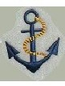

משפט ימי
|  |
99-517 ד"ר עמוס הרמן |
עדכון אחרון: 29/07/2008 17:27
סיכומי שיעור
תשס"ח:
מחברת מצטברת - איריס פינקלשטיין
תשס"ו:
תשס"ה:
מסכמת : אנונימית
13.3.05 - 21.3.05 - 8.5.05 - 5.6.05
תשס"ד:
תשס"ב:
הכנה לבחינה
מבחנים משנים קודמות
תשס"ו - מועד א'
תשס"ד - מועד א' + פתרון בציון 95
תשס"ג - מועד א'